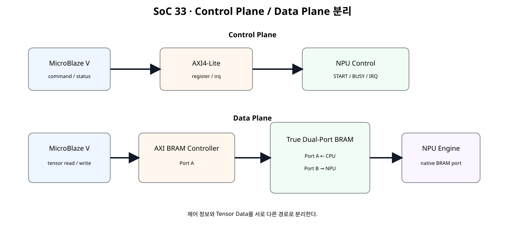
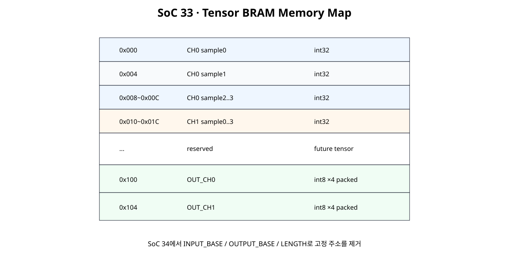
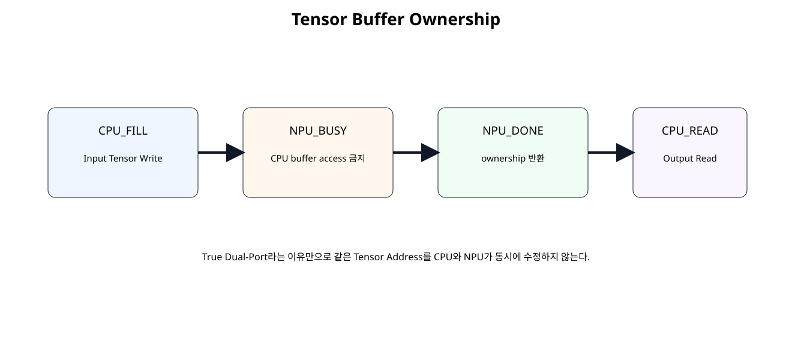
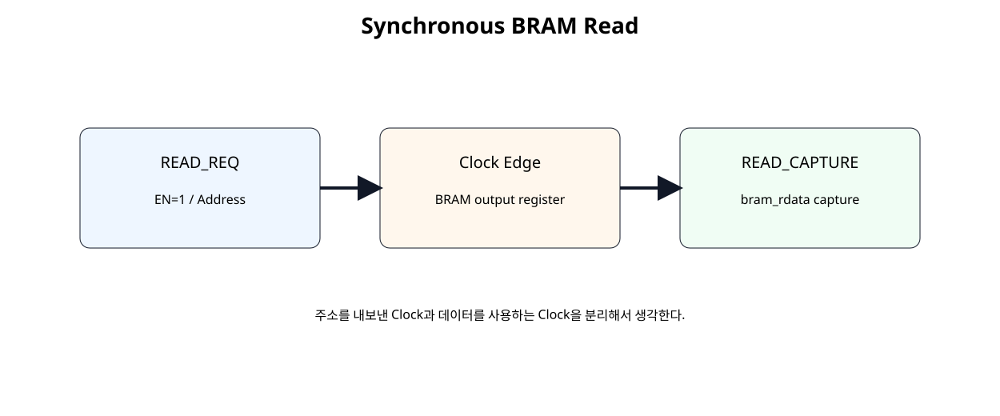

전체 학습 위치
이번 장의 목표

원본 보기 ↗
Register 입력의 한계
SoC 31의 ACC_IN0~7 Register 방식은 AXI Register Map을 배우기에는 적합하지만 Tensor 크기가 커지면 Register 수가 선형으로 증가한다. 실제 Accelerator에서는 Tensor Data를 Memory에 두고 Register에는 주소, 길이, 명령 같은 제어 정보만 두는 구조가 일반적이다.
Control Plane / Data Plane
전체 Architecture
원본 보기 ↗
True Dual-Port BRAM
True Dual-Port BRAM은 하나의 Memory Array를 두 Port가 독립적으로 접근할 수 있게 한다. Vivado 합성은 Single-Port, Simple Dual-Port, True Dual-Port RAM 추론을 지원한다.
Port A / Port B
| Port | 사용 주체 | 역할 |
|---|---|---|
| A | MicroBlaze V | AXI BRAM Controller를 통한 Tensor Read/Write |
| B | NPU | Native BRAM Interface를 통한 Tensor Read/Output Write |
4 KB / 32-bit Memory
이번 실습은 주소 해석을 쉽게 하기 위해 32-bit Word와 12-bit Byte Address를 사용한다.
Tensor Memory Map

원본 보기 ↗
Byte Address
RTL Model에서는 Word Index를 addr[11:2]로 계산한다.
Memory Ownership

원본 보기 ↗
동시 접근 Collision
Dual-Port라고 해서 동일 주소에 대한 CPU/NPU 동시 Write를 허용하는 것은 아니다. 이번 단계에서는 같은 Tensor Buffer를 동시에 수정하지 않는 Ownership Rule로 충돌을 회피한다.
Synchronous Read

원본 보기 ↗
READ_REQ / READ_CAPTURE
Memory Read Latency를 FSM 상태로 명확히 표현하면 향후 Prefetch/FIFO와 연결할 때도 Timing 관계를 유지하기 쉽다.
NPU Data Plane Engine
Input Tensor Read
NPU는 Port B에서 0x000~0x01C를 순서대로 읽어 CH0/CH1 128-bit Batch Register를 구성한다.
SoC30 Requantization 재사용
requantize_s32_to_s8.v와 requantize_batch2x4_serial.v는 SoC 32 패키지에서 수정 없이 재사용한다. SoC 33의 변경점은 계산식이 아니라 Input/Output Data 이동 방식이다.
Output Tensor Write
CPU는 NPU DONE 이후 같은 BRAM을 다시 소유하고 결과를 읽는다.
Read / Write Counter
교육용 관찰값으로 NPU가 BRAM에서 읽은 Word 수와 쓴 Word 수를 센다.
BRAM RTL Model
module tensor_bram_tdp_4k_model (
input wire clk,
// --------------------------------------------------------
// Port A: CPU / AXI BRAM Controller side
// --------------------------------------------------------
input wire a_en_i,
input wire [3:0] a_we_i,
input wire [11:0] a_addr_i,
input wire [31:0] a_wdata_i,
output reg [31:0] a_rdata_o,
// --------------------------------------------------------
// Port B: NPU native side
// --------------------------------------------------------
input wire b_en_i,
input wire [3:0] b_we_i,
input wire [11:0] b_addr_i,
input wire [31:0] b_wdata_i,
output reg [31:0] b_rdata_o
);
// ------------------------------------------------------------
// 4 KB, 32-bit, byte-addressed True Dual-Port BRAM model.
//
// Address:
// 0x000 .. 0xFFF byte address
//
// Word index:
// addr[11:2]
//
// Both ports use the same clock in SoC 33.
// Same-address simultaneous write/write or write/read access is
// intentionally prohibited by the software/hardware ownership rule.
//
// This RTL model is used for simulation/OOC education.
// In the Vivado Block Design, use a True Dual-Port Block Memory
// Generator and connect:
// Port A -> AXI BRAM Controller / MicroBlaze V
// Port B -> NPU native port
// ------------------------------------------------------------
(* ram_style = "block" *)
reg [31:0] mem [0:1023];
wire [9:0] a_word_addr_w;
wire [9:0] b_word_addr_w;
assign a_word_addr_w =
a_addr_i[11:2];
assign b_word_addr_w =
b_addr_i[11:2];
integer byte_index_a;
integer byte_index_b;
always @(posedge clk) begin
if (a_en_i) begin
// Read-first behavior for the simulation model.
a_rdata_o <=
mem[a_word_addr_w];
for (
byte_index_a = 0;
byte_index_a < 4;
byte_index_a = byte_index_a + 1
) begin
if (a_we_i[byte_index_a]) begin
mem[a_word_addr_w][
(byte_index_a * 8) +: 8
] <=
a_wdata_i[
(byte_index_a * 8) +: 8
];
end
end
end
end
always @(posedge clk) begin
if (b_en_i) begin
// Read-first behavior for the simulation model.
b_rdata_o <=
mem[b_word_addr_w];
for (
byte_index_b = 0;
byte_index_b < 4;
byte_index_b = byte_index_b + 1
) begin
if (b_we_i[byte_index_b]) begin
mem[b_word_addr_w][
(byte_index_b * 8) +: 8
] <=
b_wdata_i[
(byte_index_b * 8) +: 8
];
end
end
end
end
endmoduleData Plane RTL
module tensor_bram_data_plane_engine (
input wire clk,
input wire resetn,
input wire start_i,
input wire signed [31:0] bias_ch0_i,
input wire signed [31:0] bias_ch1_i,
input wire signed [15:0] mult_ch0_i,
input wire signed [15:0] mult_ch1_i,
input wire [5:0] shift_ch0_i,
input wire [5:0] shift_ch1_i,
input wire signed [15:0] zp_ch0_i,
input wire signed [15:0] zp_ch1_i,
output wire busy_o,
output reg done_o,
output reg error_o,
// Native BRAM Port B.
output reg bram_en_o,
output reg [3:0] bram_we_o,
output reg [11:0] bram_addr_o,
output reg [31:0] bram_wdata_o,
input wire [31:0] bram_rdata_i,
output reg [15:0] read_word_count_o,
output reg [15:0] write_word_count_o
);
// ------------------------------------------------------------
// SoC 33 Data Plane
// ------------------------------------------------------------
//
// Fixed teaching memory map:
//
// Input int32 tensor:
// 0x000 CH0 sample0
// 0x004 CH0 sample1
// 0x008 CH0 sample2
// 0x00C CH0 sample3
// 0x010 CH1 sample0
// 0x014 CH1 sample1
// 0x018 CH1 sample2
// 0x01C CH1 sample3
//
// Output packed int8 tensor:
// 0x100 OUT_CH0 = four signed int8 values
// 0x104 OUT_CH1 = four signed int8 values
//
// SoC 34 will replace these fixed addresses with programmable
// descriptor/base registers.
//
// BRAM read latency:
// request clock -> synchronous BRAM output update
// next engine state captures bram_rdata_i
// ------------------------------------------------------------
localparam [11:0] INPUT_BASE_ADDR = 12'h000;
localparam [11:0] OUTPUT_CH0_ADDR = 12'h100;
localparam [11:0] OUTPUT_CH1_ADDR = 12'h104;
localparam [3:0] ST_IDLE = 4'd0;
localparam [3:0] ST_READ_REQ = 4'd1;
localparam [3:0] ST_READ_CAPTURE = 4'd2;
localparam [3:0] ST_START_REQUANT = 4'd3;
localparam [3:0] ST_WAIT_RESULT = 4'd4;
localparam [3:0] ST_WRITE_CH0 = 4'd5;
localparam [3:0] ST_WRITE_CH1 = 4'd6;
localparam [3:0] ST_DONE = 4'd7;
reg [3:0] state_q;
reg [3:0] read_index_q;
reg [127:0] acc_ch0_batch_q;
reg [127:0] acc_ch1_batch_q;
reg requant_start_q;
wire requant_busy_w;
wire requant_done_w;
wire requant_result_valid_w;
wire [31:0] q_ch0_batch_w;
wire [31:0] q_ch1_batch_w;
wire [7:0] saturation_count_w;
assign busy_o =
(state_q != ST_IDLE) &&
(state_q != ST_DONE);
requantize_batch2x4_serial u_requant_batch (
.clk(clk),
.resetn(resetn),
.start_i(requant_start_q),
.acc_ch0_batch_i(acc_ch0_batch_q),
.acc_ch1_batch_i(acc_ch1_batch_q),
.bias_ch0_i(bias_ch0_i),
.bias_ch1_i(bias_ch1_i),
.mult_ch0_i(mult_ch0_i),
.mult_ch1_i(mult_ch1_i),
.shift_ch0_i(shift_ch0_i),
.shift_ch1_i(shift_ch1_i),
.zp_ch0_i(zp_ch0_i),
.zp_ch1_i(zp_ch1_i),
.busy_o(requant_busy_w),
.done_o(requant_done_w),
.result_valid_o(requant_result_valid_w),
.q_ch0_batch_o(q_ch0_batch_w),
.q_ch1_batch_o(q_ch1_batch_w),
.saturation_count_o(saturation_count_w)
);
// ------------------------------------------------------------
// Native BRAM Port B output policy.
// ------------------------------------------------------------
always @(*) begin
bram_en_o = 1'b0;
bram_we_o = 4'b0000;
bram_addr_o = 12'h000;
bram_wdata_o = 32'h0000_0000;
case (state_q)
ST_READ_REQ: begin
bram_en_o = 1'b1;
bram_we_o = 4'b0000;
// Each int32 input occupies one 32-bit word.
bram_addr_o =
INPUT_BASE_ADDR +
{read_index_q, 2'b00};
end
ST_WRITE_CH0: begin
bram_en_o = 1'b1;
bram_we_o = 4'b1111;
bram_addr_o = OUTPUT_CH0_ADDR;
bram_wdata_o = q_ch0_batch_w;
end
ST_WRITE_CH1: begin
bram_en_o = 1'b1;
bram_we_o = 4'b1111;
bram_addr_o = OUTPUT_CH1_ADDR;
bram_wdata_o = q_ch1_batch_w;
end
default: begin
end
endcase
end
// ------------------------------------------------------------
// Data-plane controller.
// ------------------------------------------------------------
always @(posedge clk) begin
if (!resetn) begin
state_q <= ST_IDLE;
read_index_q <= 4'd0;
acc_ch0_batch_q <= 128'd0;
acc_ch1_batch_q <= 128'd0;
requant_start_q <= 1'b0;
done_o <= 1'b0;
error_o <= 1'b0;
read_word_count_o <= 16'd0;
write_word_count_o <= 16'd0;
end else begin
requant_start_q <= 1'b0;
done_o <= 1'b0;
case (state_q)
ST_IDLE: begin
if (start_i) begin
read_index_q <= 4'd0;
acc_ch0_batch_q <= 128'd0;
acc_ch1_batch_q <= 128'd0;
error_o <= 1'b0;
read_word_count_o <= 16'd0;
write_word_count_o <= 16'd0;
state_q <= ST_READ_REQ;
end
end
ST_READ_REQ: begin
// Synchronous BRAM read request is issued through
// the combinational native BRAM port above.
state_q <= ST_READ_CAPTURE;
end
ST_READ_CAPTURE: begin
read_word_count_o <=
read_word_count_o + 16'd1;
case (read_index_q)
4'd0: acc_ch0_batch_q[31:0] <= bram_rdata_i;
4'd1: acc_ch0_batch_q[63:32] <= bram_rdata_i;
4'd2: acc_ch0_batch_q[95:64] <= bram_rdata_i;
4'd3: acc_ch0_batch_q[127:96] <= bram_rdata_i;
4'd4: acc_ch1_batch_q[31:0] <= bram_rdata_i;
4'd5: acc_ch1_batch_q[63:32] <= bram_rdata_i;
4'd6: acc_ch1_batch_q[95:64] <= bram_rdata_i;
default:
acc_ch1_batch_q[127:96] <= bram_rdata_i;
endcase
if (read_index_q == 4'd7) begin
state_q <= ST_START_REQUANT;
end else begin
read_index_q <=
read_index_q + 4'd1;
state_q <= ST_READ_REQ;
end
end
ST_START_REQUANT: begin
if (!requant_busy_w) begin
requant_start_q <= 1'b1;
state_q <= ST_WAIT_RESULT;
end
end
ST_WAIT_RESULT: begin
if (requant_result_valid_w) begin
state_q <= ST_WRITE_CH0;
end
end
ST_WRITE_CH0: begin
write_word_count_o <=
write_word_count_o + 16'd1;
state_q <= ST_WRITE_CH1;
end
ST_WRITE_CH1: begin
write_word_count_o <=
write_word_count_o + 16'd1;
state_q <= ST_DONE;
end
ST_DONE: begin
done_o <= 1'b1;
state_q <= ST_IDLE;
end
default: begin
error_o <= 1'b1;
state_q <= ST_IDLE;
end
endcase
end
end
endmodule
Demo Top
module tensor_bram_data_plane_demo_top (
input wire clk,
input wire resetn,
input wire start_i,
// CPU-side simulation/native access.
input wire cpu_en_i,
input wire [3:0] cpu_we_i,
input wire [11:0] cpu_addr_i,
input wire [31:0] cpu_wdata_i,
output wire [31:0] cpu_rdata_o,
input wire signed [31:0] bias_ch0_i,
input wire signed [31:0] bias_ch1_i,
input wire signed [15:0] mult_ch0_i,
input wire signed [15:0] mult_ch1_i,
input wire [5:0] shift_ch0_i,
input wire [5:0] shift_ch1_i,
input wire signed [15:0] zp_ch0_i,
input wire signed [15:0] zp_ch1_i,
output wire busy_o,
output wire done_o,
output wire error_o,
output wire [15:0] read_word_count_o,
output wire [15:0] write_word_count_o
);
// Pure Shell / Wrapper.
//
// Simulation/OOC:
// Port A = CPU-side native model access.
//
// Actual Vivado Block Design:
// replace tensor_bram_tdp_4k_model with a True Dual-Port
// Block Memory Generator.
// Port A is accessed through AXI BRAM Controller.
// Port B is connected to tensor_bram_data_plane_engine.
wire npu_bram_en;
wire [3:0] npu_bram_we;
wire [11:0] npu_bram_addr;
wire [31:0] npu_bram_wdata;
wire [31:0] npu_bram_rdata;
tensor_bram_tdp_4k_model u_tensor_bram (
.clk(clk),
.a_en_i(cpu_en_i),
.a_we_i(cpu_we_i),
.a_addr_i(cpu_addr_i),
.a_wdata_i(cpu_wdata_i),
.a_rdata_o(cpu_rdata_o),
.b_en_i(npu_bram_en),
.b_we_i(npu_bram_we),
.b_addr_i(npu_bram_addr),
.b_wdata_i(npu_bram_wdata),
.b_rdata_o(npu_bram_rdata)
);
tensor_bram_data_plane_engine u_data_plane (
.clk(clk),
.resetn(resetn),
.start_i(start_i),
.bias_ch0_i(bias_ch0_i),
.bias_ch1_i(bias_ch1_i),
.mult_ch0_i(mult_ch0_i),
.mult_ch1_i(mult_ch1_i),
.shift_ch0_i(shift_ch0_i),
.shift_ch1_i(shift_ch1_i),
.zp_ch0_i(zp_ch0_i),
.zp_ch1_i(zp_ch1_i),
.busy_o(busy_o),
.done_o(done_o),
.error_o(error_o),
.bram_en_o(npu_bram_en),
.bram_we_o(npu_bram_we),
.bram_addr_o(npu_bram_addr),
.bram_wdata_o(npu_bram_wdata),
.bram_rdata_i(npu_bram_rdata),
.read_word_count_o(read_word_count_o),
.write_word_count_o(write_word_count_o)
);
endmodule
Top은 Memory Model과 Engine 연결만 담당하는 Shell/Wrapper다.
MicroBlaze V CPU-side Access
실제 Block Design에서는 Port A를 AXI BRAM Controller에 연결한다. MicroBlaze V는 일반 Memory-Mapped Address처럼 Tensor BRAM을 Read/Write한다.
Tensor Buffer Driver
#ifndef TENSOR_BUFFER_H
#define TENSOR_BUFFER_H
#include "xil_io.h"
#include "xil_types.h"
// ------------------------------------------------------------
// SoC 33 Tensor BRAM fixed teaching map.
//
// These are offsets inside the Tensor BRAM address range.
// SoC 34 will make base/length information programmable.
// ------------------------------------------------------------
#define TENSOR_INPUT_CH0_S0_OFFSET 0x000U
#define TENSOR_INPUT_CH0_S1_OFFSET 0x004U
#define TENSOR_INPUT_CH0_S2_OFFSET 0x008U
#define TENSOR_INPUT_CH0_S3_OFFSET 0x00CU
#define TENSOR_INPUT_CH1_S0_OFFSET 0x010U
#define TENSOR_INPUT_CH1_S1_OFFSET 0x014U
#define TENSOR_INPUT_CH1_S2_OFFSET 0x018U
#define TENSOR_INPUT_CH1_S3_OFFSET 0x01CU
#define TENSOR_OUTPUT_CH0_OFFSET 0x100U
#define TENSOR_OUTPUT_CH1_OFFSET 0x104U
static inline void Tensor_Write32(
UINTPTR TensorBase,
u32 Offset,
u32 Value
)
{
Xil_Out32(
TensorBase + (UINTPTR)Offset,
Value
);
}
static inline u32 Tensor_Read32(
UINTPTR TensorBase,
u32 Offset
)
{
return Xil_In32(
TensorBase + (UINTPTR)Offset
);
}
#endif
CPU Access Demo
#include "xil_printf.h"
#include "xparameters.h"
#include "tensor_buffer.h"
// The actual Tensor BRAM base address comes from Vivado Address Editor.
// Replace/alias the symbol below with the generated xparameters.h symbol.
#ifndef TENSOR_BRAM_BASEADDR
#error "Define TENSOR_BRAM_BASEADDR from generated xparameters.h."
#endif
int main(void)
{
const UINTPTR tensor_base =
(UINTPTR)TENSOR_BRAM_BASEADDR;
u32 value;
xil_printf("\r\nSoC33 Tensor BRAM access demo\r\n");
Tensor_Write32(
tensor_base,
TENSOR_INPUT_CH0_S0_OFFSET,
16U
);
Tensor_Write32(
tensor_base,
TENSOR_INPUT_CH0_S1_OFFSET,
32U
);
Tensor_Write32(
tensor_base,
TENSOR_INPUT_CH0_S2_OFFSET,
48U
);
Tensor_Write32(
tensor_base,
TENSOR_INPUT_CH0_S3_OFFSET,
64U
);
Tensor_Write32(
tensor_base,
TENSOR_INPUT_CH1_S0_OFFSET,
32U
);
Tensor_Write32(
tensor_base,
TENSOR_INPUT_CH1_S1_OFFSET,
64U
);
Tensor_Write32(
tensor_base,
TENSOR_INPUT_CH1_S2_OFFSET,
96U
);
Tensor_Write32(
tensor_base,
TENSOR_INPUT_CH1_S3_OFFSET,
128U
);
value = Tensor_Read32(
tensor_base,
TENSOR_INPUT_CH0_S0_OFFSET
);
xil_printf(
"INPUT[0] = %u\r\n",
(unsigned int)value
);
value = Tensor_Read32(
tensor_base,
TENSOR_INPUT_CH1_S3_OFFSET
);
xil_printf(
"INPUT[7] = %u\r\n",
(unsigned int)value
);
// In SoC 33 this program demonstrates the CPU-side Data Plane.
// The self-checking RTL testbench verifies NPU Port-B access.
//
// SoC 34/35 will connect the Control Plane START/IRQ path
// and this Tensor BRAM Data Plane into one accelerator system.
xil_printf("SOC33 CPU TENSOR-BRAM ACCESS: PASS\r\n");
return 0;
}
SoC 33 Software는 CPU-side BRAM 접근 자체를 검증한다. Control Plane START/IRQ와 Data Plane의 완전 결합은 SoC 34~35에서 진행한다.
Vivado AXI BRAM Controller
AXI BRAM Controller는 AXI Master가 Local Block RAM을 Memory-Mapped 방식으로 접근하도록 연결하는 Endpoint Slave IP다.
Block Memory Generator
실제 Block Design에서는 Simulation용 RTL Model 대신 Block Memory Generator를 사용한다. 이번 단계에서는 True Dual-Port, 32-bit Data, Common Clock 구조를 기준으로 한다.
Connection Automation
AMD MicroBlaze V 2026.1 가이드는 AXI BRAM Controller의 BRAM Port를 Block Memory Generator에 자동 연결하고 True Dual-Port Memory로 구성하는 흐름을 제공한다. 이번 실습은 Port B를 NPU가 사용하므로 자동화 후 Port B 연결을 반드시 확인한다.
Address Editor
Tensor BRAM의 CPU-visible Base Address는 Vivado Address Editor가 결정한다. Software는 생성된 xparameters.h Symbol을 사용하며 자료에서 절대 Base Address를 임의로 정하지 않는다.
Port Width / Address Warning
IP Integrator는 서로 다른 Port Width 연결을 허용할 수 있지만 하위 Bit만 연결되는 Warning이 발생할 수 있다. BRAM Address Width와 Byte/Word Address 의미를 확인한 뒤 의도된 연결인지 판단해야 한다.
Self-Checking Testbench
`timescale 1ns / 1ps
module tb_tensor_bram_data_plane;
logic clk = 1'b0;
logic resetn = 1'b0;
logic start_i = 1'b0;
logic cpu_en_i = 1'b0;
logic [3:0] cpu_we_i = 4'b0000;
logic [11:0] cpu_addr_i = 12'h000;
logic [31:0] cpu_wdata_i = 32'h0000_0000;
wire [31:0] cpu_rdata_o;
logic signed [31:0] bias_ch0_i = 32'sd0;
logic signed [31:0] bias_ch1_i = 32'sd4;
logic signed [15:0] mult_ch0_i = 16'sd1;
logic signed [15:0] mult_ch1_i = 16'sd3;
logic [5:0] shift_ch0_i = 6'd1;
logic [5:0] shift_ch1_i = 6'd1;
logic signed [15:0] zp_ch0_i = 16'sd0;
logic signed [15:0] zp_ch1_i = -16'sd3;
wire busy_o;
wire done_o;
wire error_o;
wire [15:0] read_word_count_o;
wire [15:0] write_word_count_o;
integer check_count = 0;
integer error_count = 0;
always #5 clk = ~clk;
tensor_bram_data_plane_demo_top dut (
.clk(clk),
.resetn(resetn),
.start_i(start_i),
.cpu_en_i(cpu_en_i),
.cpu_we_i(cpu_we_i),
.cpu_addr_i(cpu_addr_i),
.cpu_wdata_i(cpu_wdata_i),
.cpu_rdata_o(cpu_rdata_o),
.bias_ch0_i(bias_ch0_i),
.bias_ch1_i(bias_ch1_i),
.mult_ch0_i(mult_ch0_i),
.mult_ch1_i(mult_ch1_i),
.shift_ch0_i(shift_ch0_i),
.shift_ch1_i(shift_ch1_i),
.zp_ch0_i(zp_ch0_i),
.zp_ch1_i(zp_ch1_i),
.busy_o(busy_o),
.done_o(done_o),
.error_o(error_o),
.read_word_count_o(read_word_count_o),
.write_word_count_o(write_word_count_o)
);
task automatic check_true(
input string name,
input bit condition
);
begin
check_count = check_count + 1;
if (!condition) begin
error_count = error_count + 1;
$error("CHECK FAIL: %s", name);
end else begin
$display("CHECK PASS: %s", name);
end
end
endtask
task automatic check_eq32(
input string name,
input logic [31:0] actual,
input logic [31:0] expected
);
begin
check_count = check_count + 1;
if (actual !== expected) begin
error_count = error_count + 1;
$error(
"CHECK FAIL: %s actual=0x%08h expected=0x%08h",
name,
actual,
expected
);
end else begin
$display(
"CHECK PASS: %s = 0x%08h",
name,
actual
);
end
end
endtask
task automatic cpu_write32(
input [11:0] address,
input [31:0] data
);
begin
@(negedge clk);
cpu_en_i = 1'b1;
cpu_we_i = 4'b1111;
cpu_addr_i = address;
cpu_wdata_i = data;
@(posedge clk);
#1;
@(negedge clk);
cpu_en_i = 1'b0;
cpu_we_i = 4'b0000;
cpu_addr_i = 12'h000;
cpu_wdata_i = 32'h0000_0000;
end
endtask
task automatic cpu_read32(
input [11:0] address,
output [31:0] data
);
begin
@(negedge clk);
cpu_en_i = 1'b1;
cpu_we_i = 4'b0000;
cpu_addr_i = address;
// Synchronous BRAM read.
@(posedge clk);
#1;
@(negedge clk);
cpu_en_i = 1'b0;
cpu_addr_i = 12'h000;
// Capture the registered Port-A output.
data = cpu_rdata_o;
end
endtask
initial begin
reg [31:0] rd;
integer timeout;
repeat (5) @(posedge clk);
resetn = 1'b1;
// --------------------------------------------------------
// 1. CPU / Port-A writes the input tensor.
// --------------------------------------------------------
cpu_write32(12'h000, 32'd16);
cpu_write32(12'h004, 32'd32);
cpu_write32(12'h008, 32'd48);
cpu_write32(12'h00C, 32'd64);
cpu_write32(12'h010, 32'd32);
cpu_write32(12'h014, 32'd64);
cpu_write32(12'h018, 32'd96);
cpu_write32(12'h01C, 32'd128);
// Read back representative input locations before NPU ownership.
cpu_read32(12'h000, rd);
check_eq32("INPUT word0 readback", rd, 32'd16);
cpu_read32(12'h01C, rd);
check_eq32("INPUT word7 readback", rd, 32'd128);
// --------------------------------------------------------
// 2. Transfer buffer ownership to NPU and start.
// CPU Port A stays idle while BUSY.
// --------------------------------------------------------
@(negedge clk);
start_i = 1'b1;
@(negedge clk);
start_i = 1'b0;
timeout = 0;
while (busy_o !== 1'b1) begin
@(posedge clk);
#1;
timeout = timeout + 1;
if (timeout > 20) begin
$fatal(1, "BUSY did not assert");
end
end
check_true(
"CPU idle while NPU owns tensor buffer",
cpu_en_i === 1'b0
);
timeout = 0;
while (done_o !== 1'b1) begin
@(posedge clk);
#1;
check_true(
"CPU remains idle during NPU BUSY",
cpu_en_i === 1'b0
);
timeout = timeout + 1;
if (timeout > 200) begin
$fatal(1, "NPU tensor engine timeout");
end
end
check_true(
"NPU error low",
error_o === 1'b0
);
check_true(
"NPU read count = 8",
read_word_count_o == 16'd8
);
check_true(
"NPU write count = 2",
write_word_count_o == 16'd2
);
// Wait until engine has returned to IDLE before CPU reclaims buffer.
@(posedge clk);
#1;
// --------------------------------------------------------
// 3. CPU / Port-A reads output tensor.
// --------------------------------------------------------
cpu_read32(12'h100, rd);
check_eq32(
"OUTPUT CH0 packed int8",
rd,
32'h2018_1008
);
cpu_read32(12'h104, rd);
check_eq32(
"OUTPUT CH1 packed int8",
rd,
32'h7F7F_6333
);
// Input data must remain intact.
cpu_read32(12'h000, rd);
check_eq32(
"INPUT word0 preserved",
rd,
32'd16
);
cpu_read32(12'h01C, rd);
check_eq32(
"INPUT word7 preserved",
rd,
32'd128
);
$display("");
$display("SOC33 CHECK COUNT : %0d", check_count);
$display("SOC33 ERROR COUNT : %0d", error_count);
if (error_count == 0) begin
$display("SOC33 TENSOR BRAM DATA-PLANE TEST: PASS");
end else begin
$fatal(
1,
"SOC33 TENSOR BRAM DATA-PLANE TEST: FAIL (%0d errors)",
error_count
);
end
#20;
$finish;
end
endmodule
Ownership Regression
Testbench는 CPU가 Input을 Write한 뒤 NPU가 BUSY인 동안 Port A를 Idle로 유지한다. DONE 후에만 CPU가 Output Address를 다시 읽는다.
Expected Output
Python Reference
Tensor input addresses:
0x000 -> 16
0x004 -> 32
0x008 -> 48
0x00C -> 64
0x010 -> 32
0x014 -> 64
0x018 -> 96
0x01C -> 128
OUTPUT_CH0 address = 0x100
OUTPUT_CH1 address = 0x104
OUT_CH0 = 0x20181008
OUT_CH1 = 0x7F7F6333
NPU BRAM reads = 8 words
NPU BRAM writes = 2 words
CPU/NPU ownership rule: no same-buffer access while NPU BUSY
SOC33 PYTHON TENSOR-BRAM REFERENCE: PASS
Spreadsheet runtime warmup failed during python startup
Traceback (most recent call last):
File "/tmp/tmp.L2TH2Y5coc/artifact_tool_v2-2.8.22/artifact_tool/patches/warm_spreadsheet_runtime_on_startup.py", line 26, in warm_spreadsheet_runtime_on_startup
File "/tmp/tmp.L2TH2Y5coc/artifact_tool_v2-2.8.22/artifact_tool/spreadsheet_warmup.py", line 772, in warm_spreadsheet_runtime
File "/tmp/tmp.L2TH2Y5coc/artifact_tool_v2-2.8.22/artifact_tool/rpc/connection.py", line 37, in get_or_create_client
File "/tmp/tmp.L2TH2Y5coc/artifact_tool_v2-2.8.22/artifact_tool/rpc/daemon.py", line 124, in start_daemon
TimeoutError: Timed out waiting for artifact tool daemon socket. Set ARTIFACT_TOOL_RPC_DAEMON_STARTUP_TIMEOUT_S=<seconds> to increase the limit.
OOC Synthesis
# SoC 33 · Tensor BRAM Data Plane OOC synthesis
set script_dir [file dirname [file normalize [info script]]]
set root_dir [file normalize [file join $script_dir ".."]]
set rtl_dir [file join $root_dir "rtl"]
set out_dir [file normalize [file join $root_dir "reports" "generic_ooc"]]
file mkdir $out_dir
create_project -in_memory -part xc7a35tcpg236-1
read_verilog [file join $rtl_dir "requantize_s32_to_s8.v"]
read_verilog [file join $rtl_dir "requantize_batch2x4_serial.v"]
read_verilog [file join $rtl_dir "tensor_bram_tdp_4k_model.v"]
read_verilog [file join $rtl_dir "tensor_bram_data_plane_engine.v"]
read_verilog [file join $rtl_dir "tensor_bram_data_plane_demo_top.v"]
synth_design \
-mode out_of_context \
-top tensor_bram_data_plane_demo_top \
-part xc7a35tcpg236-1
create_clock \
-name clk \
-period 10.000 \
[get_ports clk]
report_utilization \
-hierarchical \
-file [file join $out_dir "01_utilization_ooc.rpt"]
redirect -file [file join $out_dir "02_ramb_cells_ooc.rpt"] {
set ramb_cells [get_cells -hier -filter {REF_NAME =~ RAMB*}]
puts "RAMB primitive count: [llength $ramb_cells]"
foreach cell $ramb_cells {
puts "[get_property REF_NAME $cell] $cell"
}
}
redirect -file [file join $out_dir "03_dsp48_cells_ooc.rpt"] {
set dsp_cells [get_cells -hier -filter {REF_NAME =~ DSP48*}]
puts "DSP48 primitive count: [llength $dsp_cells]"
foreach cell $dsp_cells {
puts "[get_property REF_NAME $cell] $cell"
}
}
report_timing_summary \
-delay_type min_max \
-report_unconstrained \
-max_paths 20 \
-file [file join $out_dir "04_timing_summary_ooc.rpt"]
report_design_analysis \
-max_paths 50 \
-setup \
-logic_level_distribution \
-file [file join $out_dir "05_design_analysis_ooc.rpt"]
report_methodology \
-file [file join $out_dir "06_methodology_ooc.rpt"]
puts ""
puts "SoC 33 Tensor BRAM Data Plane OOC synthesis complete."
puts "Check actual RAMB/DSP mapping in generated reports."
RAMB / DSP Mapping
RTL에 ram_style="block" 요청을 넣었지만 실제 RAMB Primitive 수와 DSP48 Primitive 수는 합성 Report로 확인한다. 자료에서 실제 Mapping 개수를 미리 확정하지 않는다.
Control Plane 연결 위치
이번 장은 Data Plane을 독립 검증하고, 다음 단계에서 이 경계를 Register/Descriptor에 연결한다.
SoC 34 연결
고정 8 Word → LENGTH
단일 START → Job Descriptor
오류 점검
| 증상 | 원인 | 확인 |
|---|---|---|
| 첫 Read 값이 이전 Address 값 | Synchronous Read Latency 무시 | READ_REQ / READ_CAPTURE |
| Input이 실행 중 변함 | CPU/NPU Ownership 위반 | BUSY 중 CPU Buffer 접근 금지 |
| 0x004 대신 Word1이 안 읽힘 | Byte/Word Address 혼동 | addr[11:2] |
| Output이 Input 영역을 덮음 | Memory Map 충돌 | 0x000~0x01C / 0x100~0x104 |
| BRAM 대신 LUTRAM 사용 | Memory Inference 결과 차이 | RAMB Cell Report |
| Block Design Warning | BRAM Port Width 불일치 | Address/Data Width 확인 |
| CPU에서 BRAM 주소가 다름 | Base Address 하드코딩 | Address Editor / xparameters.h |
SoC 33 완료 체크리스트
- [ ] Control Plane과 Data Plane을 구분한다.
- [ ] Register Tensor 입력의 확장성 한계를 설명한다.
- [ ] True Dual-Port BRAM의 Port A/B 역할을 구분한다.
- [ ] 4 KB / 32-bit / 1024 Word 관계를 계산한다.
- [ ] Byte Address와 Word Index를 구분한다.
- [ ] CPU/NPU Memory Ownership 규칙을 적용한다.
- [ ] Synchronous BRAM Read Latency를 FSM으로 처리한다.
- [ ] NPU가 8 Word를 읽고 2 Word를 쓴다.
- [ ] SoC30 Requantization RTL을 그대로 재사용한다.
- [ ] MicroBlaze V는 AXI BRAM Controller로 Tensor BRAM에 접근한다.
- [ ] 실제 RAMB/DSP 수는 Synthesis Report로 확인한다.
- [ ] 다음 단계에서 Base/Length를 Descriptor로 바꿀 준비를 한다.
공식 문서 및 근거
| 자료 | 확인 항목 |
|---|---|
| AMD UG1711 · Run Connection Automation · 2026.1 | AXI BRAM Controller와 Block Memory Generator True Dual-Port 연결 흐름 |
| AMD UG901 · Memory Inference Capabilities · 2026.1 | Single/Simple/True Dual-Port RAM, Byte Write Enable |
| AMD UG953 · BRAM_TDP_MACRO · 2026.1 | 7-Series True Dual-Port BRAM의 독립 Port와 synchronous access |
| AMD UG994 · Connecting Ports with Different Widths · 2026.1 | BRAM Port Width mismatch와 lower-order bit 연결 Warning |
| AMD PG078 · AXI BRAM Controller | AXI Master와 Local BRAM 연결 |